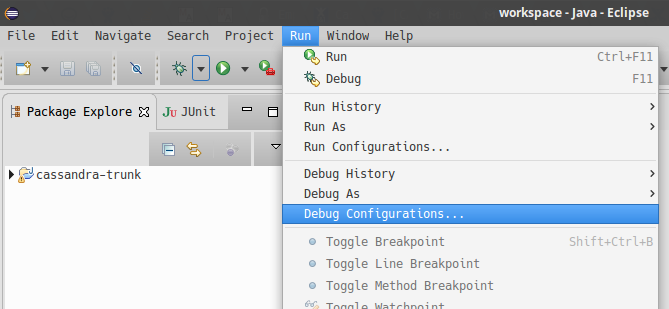
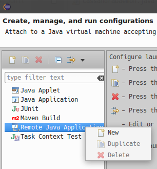
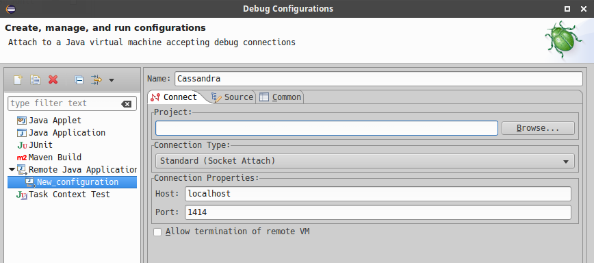
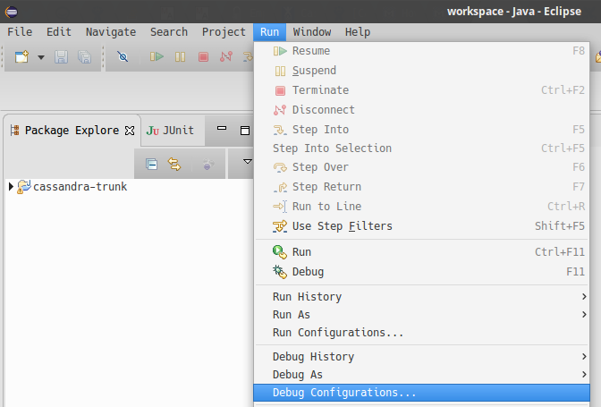
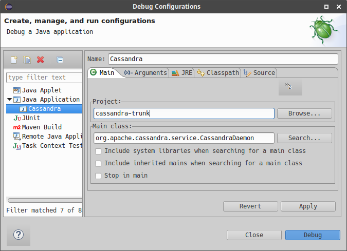

git clone https://github.com/<your_git_name>/cassandra.git cassandraBuilding and IDE Integration
Prerequisites
Building Cassandra from source is the first important step in contributing to the Apache Cassandra project. You will need to install Java (JDK 8 or 11, depending on which version you want to build Cassandra against, best is to install both and then switch between them when needed), Git, and Ant (including ant-optional).
Getting the source code
The source code for Cassandra is shared on the central Apache Git repository and organized by branch, one branch for each major version. You can access the code for the current development branch at gitbox.apache.org/repos/asf/cassandra.git (the primary location) or at github.com/apache/cassandra (a mirror location).
However, to develop a patch or a new feature, you should fork the Cassandra project first and then clone it from your own fork:
Building Cassandra
Cassandra is a Java project which is built using Ant.
The build file, build.xml located in the root of the project content,
has various tasks defined (you can list all of them with some short
descriptions by running ant -p).
The build uses the Java compiler which is currently set up in your
shell. By default, the build uses Java 8. If you want to build
with Java 11, you need to either add a build property -Duse.jdk11=true
to your Ant build command or export the environment variable
CASSANDRA_USE_JDK11=true. Otherwise, if you run the build using
Java 11, the build script complains.
Now you can build Cassandra with the default task - just execute
ant or ant jar. This may take a significant amount of time depending
on artifacts that have to be downloaded or the number of classes that
need to be compiled. When the build completes, you can find a JAR file
in the build directory, and the database service can be started with
the bin/cassandra script.
Building a distribution
Some tasks you might be interested in are:
-
build- compile the production code without producing any JARs -
build-test- compile the test code without producing any JARs -
artifacts- generate Cassandra distribution inbuild/distdirectory and package it totar.gz(with and without sources) -
mvn-install- generatecassandra-allJAR artifact along with sources and JavaDoc, and install it in the local Maven repository -
realclean- clean the project from any build products, as well as from any dependencies (in fact that means removingbuildandlibdirectories)
|
Hint
Remember to clean the project after switching branches as build artifacts are versioned. |
There are other tasks related to testing, and they are covered in Testing section.
Setting up Cassandra in IntelliJ IDEA
IntelliJ IDEA by JetBrains is one of the most popular IDEs for Cassandra and Java development in general. The Community Edition can be freely downloaded with all features needed to get started developing Cassandra.
Use the following procedure for Cassandra 2.1.5+:
-
Generate project files by executing the following target from Ant build:
ant generate-idea-files-
Start IDEA.
-
Open the IDEA project from the checked-out Cassandra directory using
File > Openin IDEA’s menu.
The project generated by ant generate-idea-files contains
nearly everything you need to debug Cassandra and execute unit tests.
|
Hint
Although you do not need to build the project with |
You should be able to:
-
Run/debug defaults for JUnit
-
Run/debug configuration for Cassandra daemon
-
Read/modify the license header for Java source files
-
Study Cassandra code style
-
Inspections
|
Hint
If you wish to work with older Cassandra versions, see our wiki for instructions. |
Opening Cassandra in Apache NetBeans
Apache NetBeans is the elder of the open sourced java IDEs, and can be used for Cassandra development. There is no project setup or generation required to open Cassandra in NetBeans. Use the following procedure for Cassandra 4.0+.
First, clone and build Cassandra. Then execute the following steps to use NetBeans.
-
Start Apache NetBeans
-
Open the NetBeans project from the ide/ folder of the checked-out Cassandra directory using
File > Open Projectin NetBeans' menu.
You should be able to:
-
Build code
-
Run code
-
Debug code
-
Profile code
These capabilities use the build.xml script.
Build/Run/Debug Project are available via the Run/Debug menus, or the
project context menu.
Profile Project is available via the Profile menu. In the opened
Profiler tab, click the green "Profile" button.
Cassandra’s code style is honored in ide/nbproject/project.properties.
The JAVA8_HOME system environment variable must be set for NetBeans to execute the Run/Debug/Profile ant targets to execute.
Setting up Cassandra in Eclipse
Eclipse is a popular open source IDE that can be used for Cassandra development. Various Eclipse environments are available from the download page. The following guide was created with "Eclipse IDE for Java Developers".
These instructions were tested on Ubuntu 16.04 with Eclipse Neon (4.6) using Cassandra versions 2.1 through 3.x.
First, clone and build Cassandra. Then execute the following steps to use Eclipse.
-
Generate the IDEA files using ant:
ant generate-eclipse-files-
Start Eclipse.
-
Open the Eclipse project from the checked-out Cassandra directory using
File > Import > Existing ProjectsandWorkspace > Selectgit directory. Select the correct branch, such ascassandra-trunk. -
Confirm and select
Finishto import your project.
Find the project in Package Explorer or Project Explorer.
You should not get errors if you build the project automatically using these
instructions. Don’t set up the project before generating the files with ant.
You should be able to:
-
Run/debug defaults for JUnit
-
Run/debug Cassandra
-
Study Cassandra code style
Unit tests can be run from Eclipse by simply right-clicking the class
file or method and selecting Run As > JUnit Test.
Tests can be debugged by defining breakpoints (double-click line number) and
selecting Debug As > JUnit Test.
Alternatively all unit tests can be run from the command line as described in testing.
Debugging Cassandra Using Eclipse
There are two ways to start a local Cassandra instance with Eclipse for debugging. You can either start Cassandra from the command line or from within Eclipse.
Debugging Cassandra started at command line
-
Set environment variable to define remote debugging options for the JVM:
export JVM_EXTRA_OPTS="-agentlib:jdwp=transport=dt_socket,server=y,suspend=n,address=1414" -
Start Cassandra by executing the
./bin/cassandra
Next, connect to the running Cassandra process by:
-
In Eclipse, select
Run > Debug Configurations.

-
Create new remote application.

-
Configure connection settings by specifying a name and port 1414. Confirm
Debugand start debugging.

Debugging Cassandra started from Eclipse
Cassandra can also be started directly from Eclipse if you don’t want to use the command line.
-
In Eclipse, select
Run > Run Configurations.

-
Create new application.

-
Specify name, project and main class
org.apache.cassandra.service.CassandraDaemon

-
Configure additional JVM specific parameters that will start Cassandra with some of the settings created by the regular startup script. Change heap related values as needed.
-Xms1024M -Xmx1024M -Xmn220M -Xss256k -ea -XX:+UseThreadPriorities -XX:ThreadPriorityPolicy=42 -XX:+UseParNewGC -XX:+UseConcMarkSweepGC -XX:+CMSParallelRemarkEnabled -XX:+UseCondCardMark -javaagent:./lib/jamm-0.3.0.jar -Djava.net.preferIPv4Stack=true
-
Confirm
Debugand you should see the output of Cassandra start up in the Eclipse console.
You can now set breakpoints and start debugging!
General notes
You may sometimes encounter some odd build failures when running the ant commands above. If you do, start ant with the realclean option:
ant realcleanRemember that all the tasks mentioned above may depend on building source files. If there are actual compilation errors in the code, you may not be able to generate project files for IntelliJ Idea, Netbeans, or Eclipse. It is especially important that you have imported the project adequately into IDE before doing merges or rebases. Otherwise, if there are conflicts, the project cannot be opened in IDE, and you will be unable to use any fancy conflict resolution tools offered by those IDEs.
© 2009- The Apache Software Foundation under the terms of the Apache License 2.0. Apache, the Apache feather logo, Apache Cassandra, Cassandra, and the Cassandra logo, are either registered trademarks or trademarks of The Apache Software Foundation.